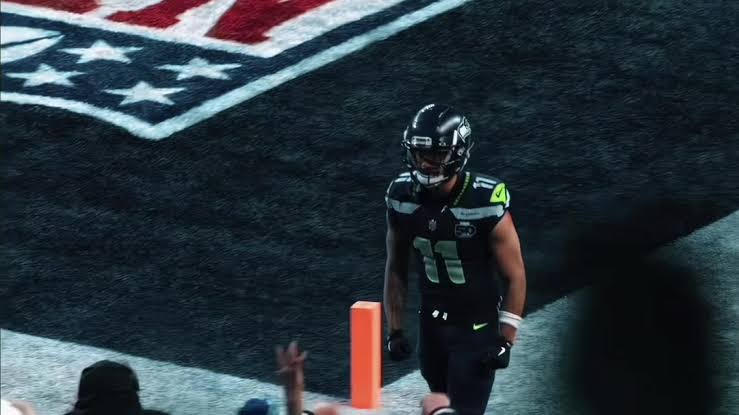
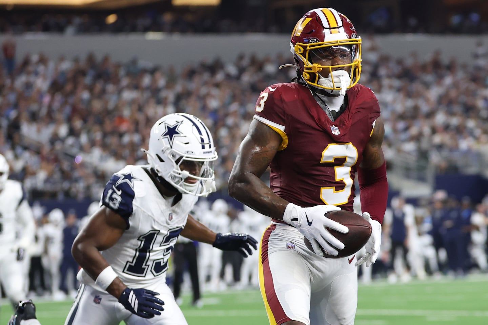
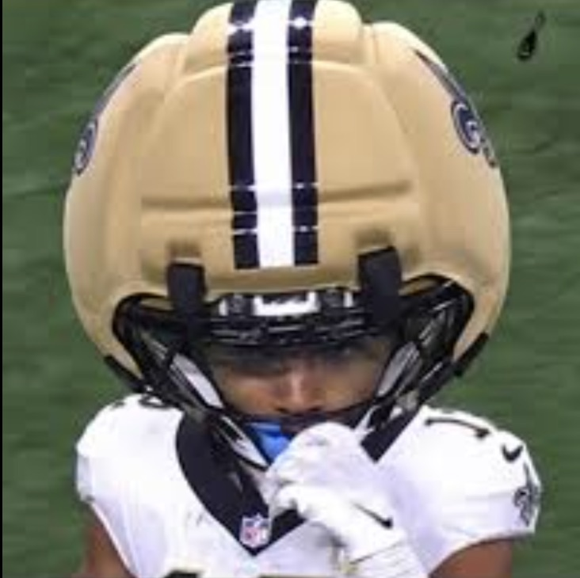
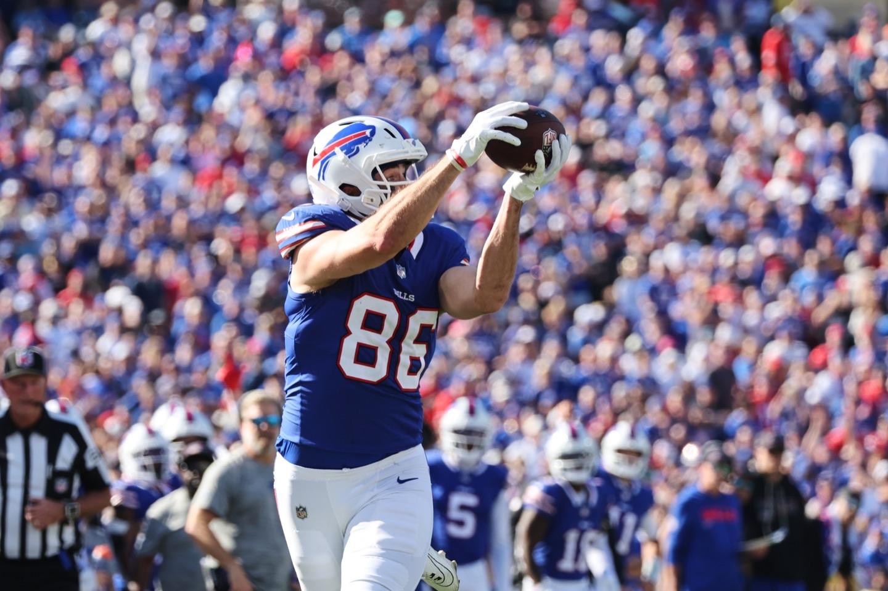
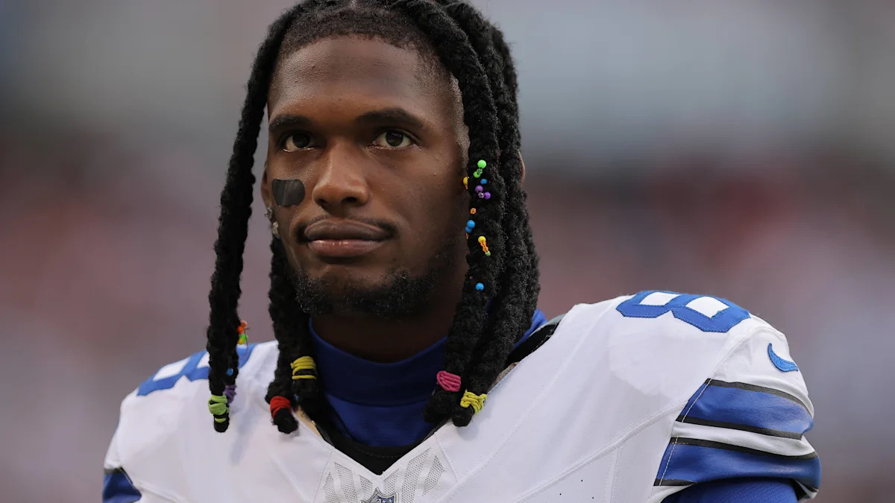
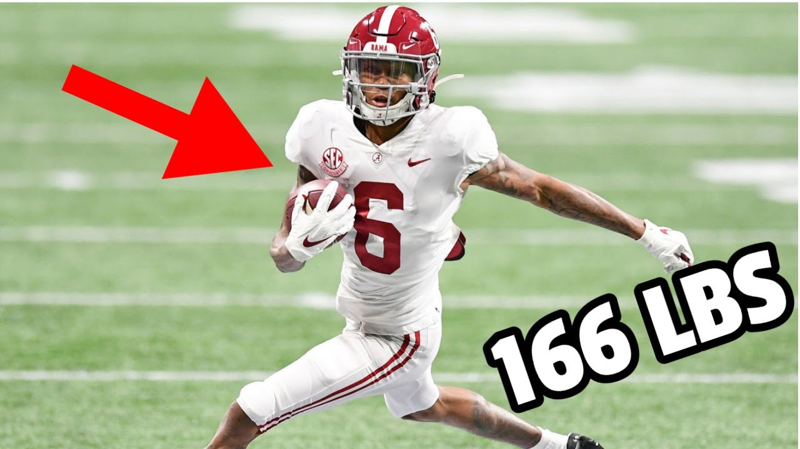
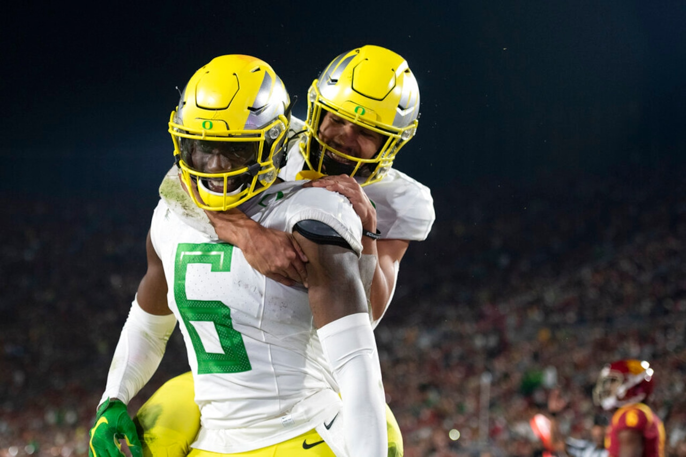
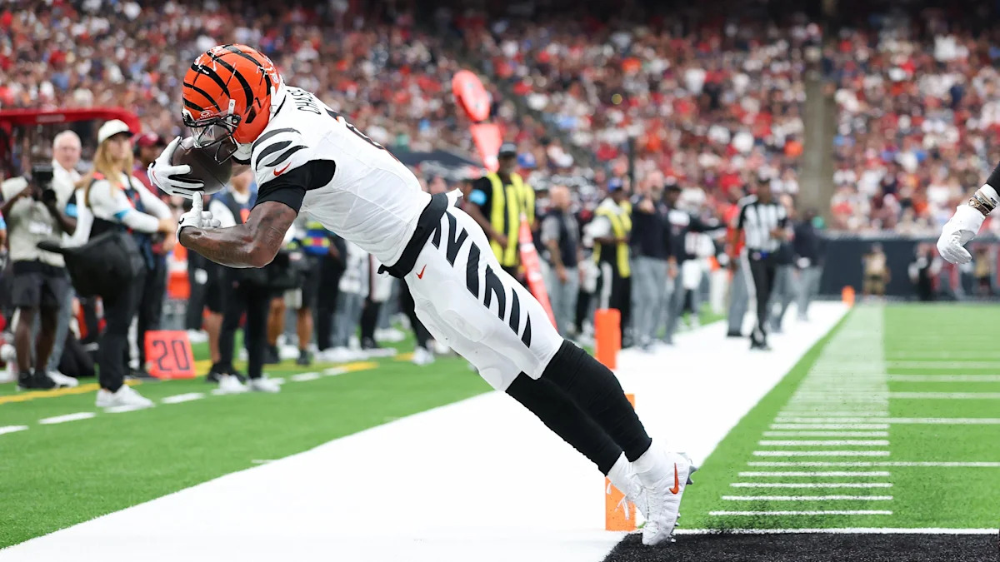
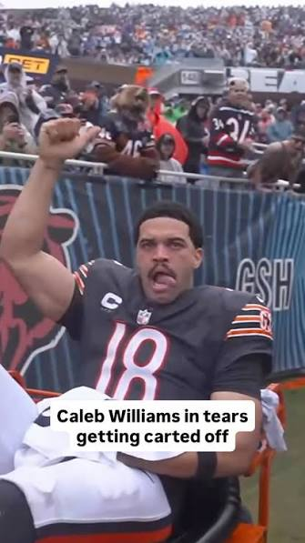

Well, we didn’t really learn a lot this week, did we? Except… maybe there’s less parity this year — the teams at the top did well, the teams at the bottom, really bottomed out.
There’s a ton of good data around (NFL) teams that are 0–2 bouncing back in week three, so maybe we just need to wait one more week.
All I know is that playing Kris and CJ in the first weeks wasn’t fun! But at least I made $20 off of CJ when I lost — that doesn’t happen often.
Let’s dive in.
Week Two Recap
 Kris
Spitters not Quiters
Smith-Njigba 42.5 · Gibbs 23.3
142.9W
Kris
Spitters not Quiters
Smith-Njigba 42.5 · Gibbs 23.3
142.9W
 Pangy
Josh Allen’s New Phat Hog
Chase 26.5 · MIN D/ST 17.0
115.88L
Pangy
Josh Allen’s New Phat Hog
Chase 26.5 · MIN D/ST 17.0
115.88L
 CJ
Monty's python Hurts good
St. Brown 35.2 · Walker 23.8
138.76W
CJ
Monty's python Hurts good
St. Brown 35.2 · Walker 23.8
138.76W
 Jake
Juwana Trade?
Purdy 28.48 · Henry 17.7
105.08L
Jake
Juwana Trade?
Purdy 28.48 · Henry 17.7
105.08L
 Neil
JA17’s Hand Me Down Hog
Allen 40.82 · Kincaid 22.5
137.42W
Neil
JA17’s Hand Me Down Hog
Allen 40.82 · Kincaid 22.5
137.42W
 Joel
JOELLM
Smith 27.7 · Irving 13.0
91.26L
Joel
JOELLM
Smith 27.7 · Irving 13.0
91.26L
 Andy
U Sown Loik Ya Frm LONDON
Taylor 29.2 · Kelce 25.1
126.42W
Andy
U Sown Loik Ya Frm LONDON
Taylor 29.2 · Kelce 25.1
126.42W
 PJ
The Questionables
McCaffrey 22.6 · Cook 20.9
82.1L
PJ
The Questionables
McCaffrey 22.6 · Cook 20.9
82.1L
 Tony
Cee Deez Nuts
Lamb 35.3 · McMillan 15.1
116.28W
Tony
Cee Deez Nuts
Lamb 35.3 · McMillan 15.1
116.28W
 Seif
PUP
K. Williams 15.7 · Coker 14.6
77.62L
Seif
PUP
K. Williams 15.7 · Coker 14.6
77.62L
League overview
| Team | W–L | PF | Scoring | |
|---|---|---|---|---|
| 1 | CJ | 2–0 | 318.28 |
W1: 179.52W2: 138.76
|
| 2 | Kris | 2–0 | 295.56 |
W1: 152.66W2: 142.90
|
| 3 | Neil | 2–0 | 271.38 |
W1: 133.96W2: 137.42
|
| 4 | Tony | 2–0 | 252.44 |
W1: 136.16W2: 116.28
|
| 5 | Andy | 1–1 | 240.04 |
W1: 113.62W2: 126.42
|
| 6 | Joel | 1–1 | 238.26 |
W1: 147.00W2: 91.26
|
| 7 | Jake | 0–2 | 226.52 |
W1: 121.44W2: 105.08
|
| 8 | Seif | 0–2 | 187.18 |
W1: 109.56W2: 77.62
|
| 9 | Pangy | 0–2 | 183.94 |
W1: 68.06W2: 115.88
|
| 10 | PJ | 0–2 | 175.60 |
W1: 93.50W2: 82.10
|
Matchup of the Week
1-1
2-0
Can someone (for the love of god) unseat Kris from the top spot? Joel’s squad had a great first week, but fell way off in week two, but showed he has the potential to get this done. Big one for the standings too.
What to watch for: QB Delight
It’s Lamar vs. Mahomes. The battle for the second best QB in football. Lamar in Rio, Mahomes in Miami — something something about women in bikinis, idk.
Waiver Wire
Season pickups (53)
Saturday, Sep 26
- Neil - Khalil Shakir (WR) - $1
Friday, Sep 25
- Pangy - Caleb Douglas (WR) - $1
Thursday, Sep 24
- Jake - Drake Maye (QB) - $4
- Jake - J.K. Dobbins (RB) - $3
- PJ - Kyler Murray (QB) - $2
- Jake - Emmett Johnson (RB) - $1
- Andy - Jordan Love (QB) - $1
- Neil - Matt Gay (K) - $1
- Andy - Xavier Worthy (WR) - $1
Wednesday, Sep 23
- PJ - Denzel Boston (WR) - $23
- PJ - Dalton Schultz (TE) - $18
- Joel - Patrick Mahomes (QB) - $16
- Andy - Bryce Young (QB) - $11
- Kris - Rashod Bateman (WR) - $11
- Seif - George Kittle (TE) - $9
- Neil - Tyler Shough (QB) - $9
- Neil - Jonah Coleman (RB) - $8
- Tony - Jared Goff (QB) - $4
- CJ - Josh Downs (WR) - $3
- Joel - NYG D/ST (DST) - $3
- PJ - Harrison Butker (K) - $2
- Tony - CIN D/ST (DST) - $1
- Jake - Jordan Mason (RB) - $1
- PJ - NO D/ST (DST) - $1
- Seif - Tyler Loop (K) - $1
Sunday, Sep 20
- Andy - NE D/ST (DST) - $1
- Andy - Travis Kelce (TE) - $1
- Jake - Evan McPherson (K) - $0
- Neil - Trey Smack (K) - $0
Friday, Sep 18
- PJ - GB D/ST (DST) - $1
Thursday, Sep 17
- CJ - Aaron Jones (RB) - $12
Wednesday, Sep 16
- Seif - Jalen Coker (WR) - $23
- Joel - Devaughn Vele (WR) - $15
- Pangy - Kaelon Black (RB) - $11
- Tony - Matthew Golden (WR) - $9
- Seif - Kenyon Sadiq (TE) - $6
- Neil - SF D/ST (DST) - $6
- Jake - Brock Purdy (QB) - $4
- Andy - Caleb Douglas (WR) - $2
- CJ - KC D/ST (DST) - $1
Earlier
- Jake - Chase McLaughlin (K) - $0
- PJ - Jaxson Dart (QB) - $0
- Seif - Darren Waller (TE) - $1
- CJ - T.J. Hockenson (TE) - $1
- Pangy - Tyler Allgeier (RB) - $1
- Seif - Tyler Loop (K) - $1
- Joel - TB D/ST (DST) - $1
- Tony - Jacob Saylors (RB) - $1
- Andy - Woody Marks (RB) - $1
- PJ - Deebo Samuel (WR) - $1
- Pangy - Mike Washington (RB) - $0
- Seif - MarShawn Lloyd (RB) - $4
- CJ - LAC D/ST (DST) - $0

1. Kris — Spitters not Quiters Last Week: 1 ↔
2-0 W2 PF: 295.56 FAAB: $89
Week-to-week scoring spread 9.76
Dashed line is league average (119.46). Same scale for every team.
If there is a god, his name is Jaxon Smith-Njigba.
Kris, are you sure you don’t want to keep Pickens in the fifth round, instead!?
What could go wrong?
There’s some uncertainty on this team for sure, but it can be completely ignored if JSN and Gibbs are who they are. So… I guess let’s say, “what if Darnold can’t be Drew Lock?”

2. CJ — Monty’s python Hurts good Last Week: 2 ↔
2-0 W2 PF: 318.28 FAAB: $83
Week-to-week scoring spread 40.76
Dashed line is league average (119.46). Same scale for every team.
Remember when Joel dropped Olave? I do, Chris does, and I’m sure Joel does.
Plug in K9, on pace to have the most touches in a season ever, and similar to Kris, he don’t need much more.
What could go wrong?
See K9 on pace to have the most touches in a season ever… I mean this guy’s not the hallmark of health.

3. Neil — JA17’s Hand Me Down Hog Last Week: 3 ↔
2-0 W2 PF: 271.38 FAAB: $75
Week-to-week scoring spread 3.46
Dashed line is league average (119.46). Same scale for every team.
It’s fun to write for Neil — his team has no Super Bowls, he has no FFFB championships, but he’s got the best of the best right now… he can sit back and watch Joshua do his thing while winning in both lanes.
But it’s obviously time to call out Dalton Kincaid. We’ve been waiting for this for years and it’s finally happening.
What could go wrong?
Bills start their Bills stuff before the playoffs begin.

4. Tony — Cee Deez Nuts Last Week: 4 ↔
2-0 W2 PF: 252.44 FAAB: $85
Week-to-week scoring spread 19.88
Dashed line is league average (119.46). Same scale for every team.
Tony got the W, but if you look at the box score, it was kinda unimpressive (I mean, besides a monster game from Lamb).
Following up on last week, Golden is back on this squad and just gave him a great start to the week with 5 catches, a nice and even 100 yards and a tuddy. This does seem like a player that could make a big difference in our league’s season.
What could go wrong?
Man, I’m gonna cop out here, but I don’t see a lot of bad potential scenarios on this team. I’m not head over heels, either, but there’s good depth and upside. (but this is me, so I’m probably wrong)
5. Andy — U Sown Loik Ya Frm LONDON Last Week: 7 ▲
1-1 W1 PF: 240.04 FAAB: $82
Week-to-week scoring spread 12.80
Dashed line is league average (119.46). Same scale for every team.
When the computer drafted London for Andy, I dreamed of this moment… he has embraced him as his namesake, renaming his team U Sown Loik Ya Frm LONDON. If you weren’t around Andy in 2008 when Forgetting Sarah Marshall came out, you missed that he fucking loved Paul Rudd’s character and him saying this line. The universe is beautiful, and I’m glad it aligned to make this happen…
PLUS — I said he was the worst pick of the draft last week, and Penix said “uh uh, no.”, delivering him from purgatory on TNF. Maybe I was wrong (SHOCK!)
What could go wrong?
There are four legs on this table right now that currently bear weight, but perhaps have some splinters: Kelce, Breece, Skattebo and (wow, we’re really here…) Bryce Young.

6. Joel — JOELLM Last Week: 5 ▼
1-1 L1 PF: 238.26 FAAB: $65
Week-to-week scoring spread 55.74
Dashed line is league average (119.46). Same scale for every team.
His AI has proved to be very AI. Great one week, not great the next.
I mean, yeesh, you know it’s bad when your best player is an Eagle (Smith). The little guys on this team were kinda little this week, but who the fuck knows what’ll happen this week.
What could go wrong?
Little guys in the NFL.

7. Jake — Juwana Trade? Last Week: 6 ▼
0-2 L2 PF: 226.52 FAAB: $87
Week-to-week scoring spread 16.36
Dashed line is league average (119.46). Same scale for every team.
God I hate/love my team. Of the 0-2 teams, at least I’ve scored 100 each week (grimace). I feel pretty good about a lot, but it’s fucking disgusting to already be considering benching my first round pick (Barkley), and my favorite guy (Egbuka), and it’s only week three.
Purdy and Henry have been great. Davante was great on my bench last week, yay.
So you’re saying there’s a chance!?
Parker Washington is clearly the focal point in JAX. Pickens has to improve.
Juwan is providing a great floor for my last pick on the draft — he scored last week and they took it off the board, and he just barely didn’t score a second time in week one. Fun fact — I didn’t even remember him on the Ducks; he was a Nittany Lion until he finished with the Ducks, but it was 2020 and I don’t remember shit from the pandemic.

8. Pangy — Josh Allen’s New Phat Hog Last Week: 10 ▲
0-2 L2 PF: 183.94 FAAB: $87
Week-to-week scoring spread 47.82
Dashed line is league average (119.46). Same scale for every team.
Big bounce back for Pangy after week one’s dud.
Chase had one of the sickest catches ever. Aubrey got back to himself.
But we’re still waiting on these god damn Bears — Kalif Raymond has more catches and yards than Loveland and Burden combined. WTF?
So you’re saying there’s a chance!?
Well, yeah, it’s probably the Bears! Again, this team’s going to go as the Bengals and Bears do, and the Bengals got it going-medium, his Bears need a real wake up call.
9. PJ — The Questionables Last Week: 9 ↔
0-2 L2 PF: 175.60 FAAB: $52
Week-to-week scoring spread 11.40
Dashed line is league average (119.46). Same scale for every team.
He took some gambles this year, and sometimes when you gamble you lose. I mean, that’s never happened to me, but apparently it’s a thing.
CMC and Cook got it going after a slow week, but the rest of the team fell asleep. Dart looked like a great pickup after week one, but that’s over now.
So you’re saying there’s a chance!?
He’s got four guys who were 1st round FFB picks over the last few years. So there’s probably potential that could rev up.

10. Seif — PUP Last Week: 8 ▼
0-2 L2 PF: 187.18 FAAB: $50 (−$5 illegal $0 bid)
Week-to-week scoring spread 31.94
Dashed line is league average (119.46). Same scale for every team.
Updated his name accordingly — this team is fucking injured. Then, insult to injury — I gotta dock him $5 for an illegal $0 bid!
Well, maybe he gets Bowers back this week, maybe Flowers is back too!? One thing we know — Caleb Williams will never play another down in his career, after that horrible, horrible… horrible, oh so horrendous… I’m not sure if I’ll ever be able to watch football again injury. Why do we watch this game?
So you’re saying there’s a chance!?
Availability is the best ability, and there’s no long-term injuries here, so maybe his bunch can get healthy. But being healthy isn’t necessarily a formula for winning, either.
Good luck everyone, besides Seif!
- Snake